BT-
BT-How to use
BT-EX5 使い方マニュアル
はじめての方でも、上から順に読めば使えるようにまとめました。絵の中の赤い丸の番号が、押すところです。▶ のついた動画は、押すと実際の操作が流れます(音は出ません)。
はじめに(ログイン)
BT-EX5 のメンバー専用です。最初の1回だけ、ログインします。
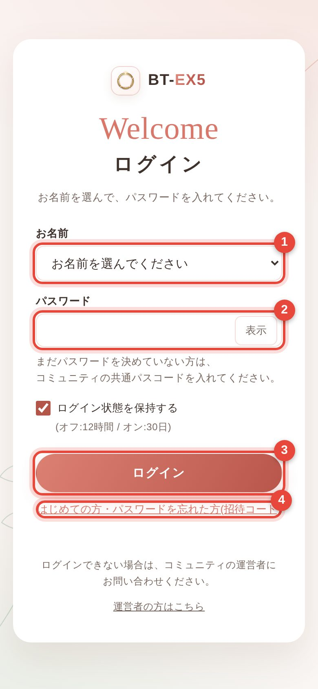
お名前を選んで、パスワードを入れる
- お名前の欄を押して、一覧から自分の名前を選びます。
- パスワードを入れます。まだ自分のパスワードを決めていない方は、運営から聞いたコミュニティの共通パスコードを入れてください。
- ログイン を押します。「ログイン状態を保持する」にチェックがあれば、30日間はログインしたままです。
- はじめての方・パスワードを忘れた方は、いちばん下の「招待コード」から入れます(招待コードは運営から届きます)。
ログインしたら、ホームの「はじめての方へ」に、やることが7つ並びます。上から順に押していけば、準備が終わります。まずは自分専用のパスワードを決めておくと安心です。
スマホのホーム画面に追加する
アイコンを押すだけで開けるようになります。ふつうのアプリと同じように使えて、通知も受け取れます。
iPhone(Safari)
- Safari で会員サイトを開きます。
- 画面の下(または上)の 共有ボタンを押します。
- 下にずらして「ホーム画面に追加」を押します。
- 右上の「追加」を押すと、BT-EX5 のアイコンができます。
Android(Chrome)
- Chrome で会員サイトを開きます。
- 右上の ︙(点が3つ)を押します。
- 「ホーム画面に追加」(または「アプリをインストール」)を押します。
- 「追加」を押すと、アイコンができます。
iPhone で通知を受け取るには、ホーム画面に追加したアイコンから開いて、マイページの「通知・設定」で通知をオンにしてください(Safari のままでは通知が届きません)。
画面の見方
いちばん下のタブで画面を切りかえます。上のベルでお知らせ、丸い名前のボタンでマイページです。
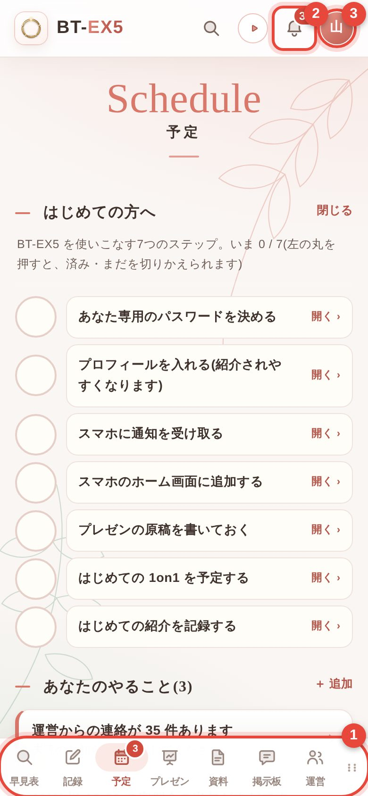
- 下のタブ:押すと、それぞれの画面に切りかわります(下の表)。赤い数字は、見ていないものの数です。
- ベル:自分に関係するお知らせ(紹介が届いた・コメントが付いた など)が見られます。
- 丸い名前のボタン:マイページ。プロフィールや通知の設定はここから。
- 早見表聞いた相談から、紹介先のメンバーを探す
- 記録紹介・ありがとうマイル・1on1 を記録する、分析を見る
- 予定定例会の日程と出欠、カレンダー
- 資料ポスター・お誘い画像を作る
- 掲示板紹介のお願い・告知・お礼を投稿する
- プレゼン定例会のスライド進行
運営だけ - 運営運営会議・議事録
運営だけ
タブが多いときは、横にずらすと残りが出ます。
紹介先を探す 早見表
「こんな人を探している」と聞いたら、その言葉を入れるだけで、合うメンバーがわかります。
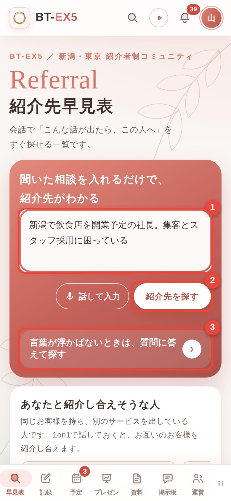
聞いた相談を、そのまま入れる
- 赤い枠に、聞いた相談をそのまま入れます(例:「新潟で飲食店を開業予定。集客と採用に困っている」)。話して入力を押すと、声でも入れられます。
- 紹介先を探す を押します。
- 言葉が浮かばないときは、「質問に答えて探す」(紹介診断・3問)を押します。
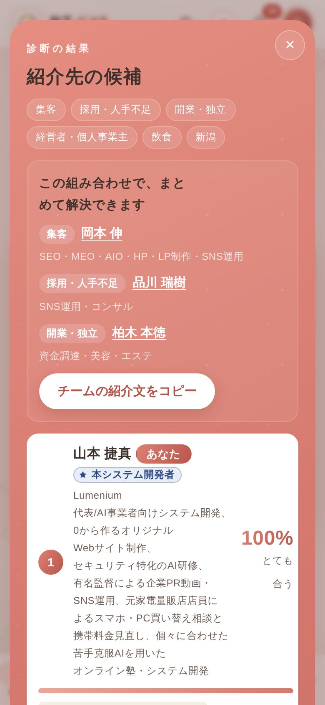
結果の見方
- 上に「この組み合わせで、まとめて解決できます」と、悩みごとに合うメンバーが並びます。
- その下に、合う順にメンバーのカードが出ます。右の % は、どれくらい合うかの目安です。
- チームの紹介文をコピー を押すと、相手に送る紹介文がコピーされます。LINE などに貼り付けて送れます。
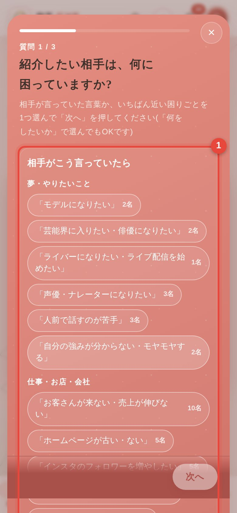
質問に答えて探す(紹介診断)
- 「相手がこう言っていたら」などの言葉から、いちばん近いものを押します。
3問に答えると、合うメンバーが出ます。15秒ほどで終わります。
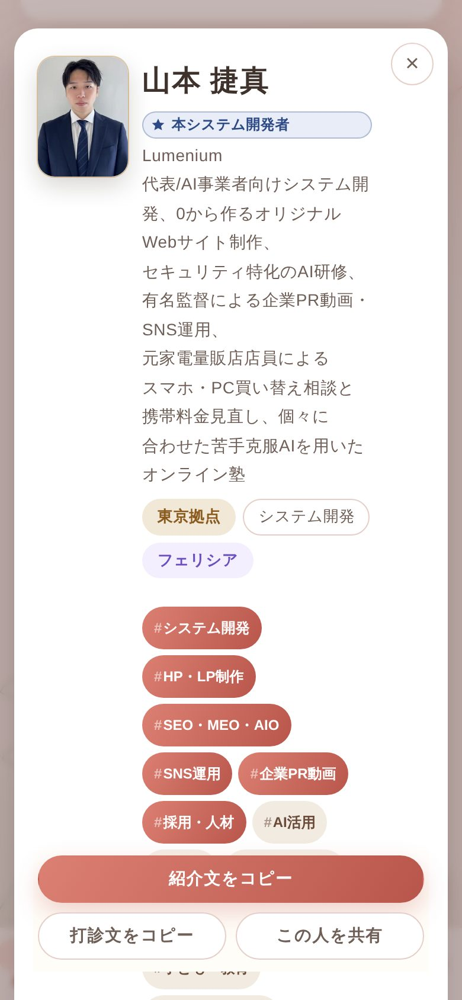
メンバーのくわしい内容を見る
- カードの名前を押すと、仕事の内容・求める紹介・こんな話が出たら、が全部見られます。
- 下の 紹介文をコピー で、この人を紹介する文がコピーされます。「この人を共有」で LINE などに送れます。
- カードの右上の ☆ を押すと「お気に入り」になり、マイページにも並びます。
定例会の出欠 予定
定例会ごとに、出席か欠席かを必ず登録してください。
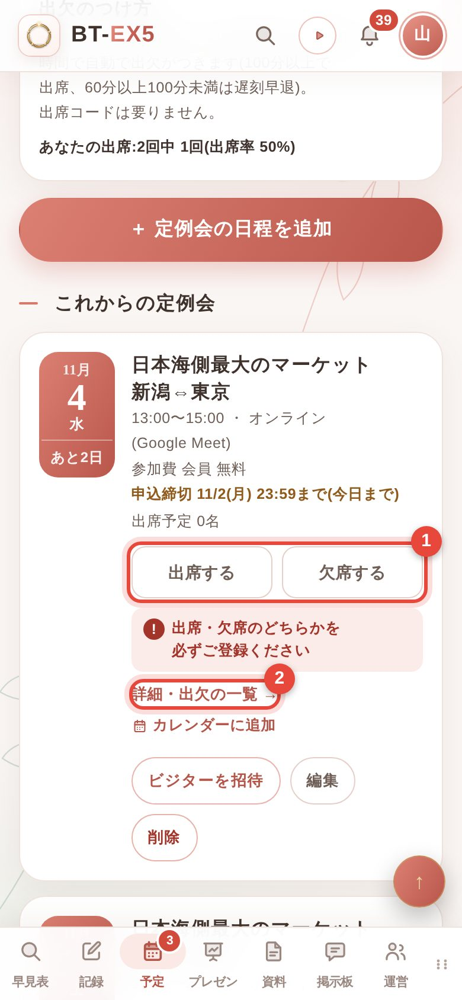
出席・欠席を押す
- その日の定例会のカードで 出席する か 欠席する を押します。欠席のときは「◯月◯日の定例会を欠席にしますか?」と確かめてから登録します。
- 「詳細・出欠の一覧」で、当日の流れ・参加リンク・ほかのメンバーの出欠が見られます。
オンラインの定例会は、Google Meet に参加した時間で自動で出席がつきます。会場の定例会は、受付の QR コードを読むか、4桁の出席コードを入れます。
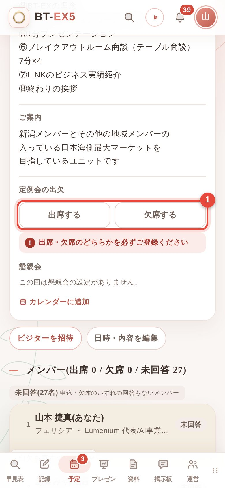
まちがえて押したとき
- 申込締切までは、詳細の画面で何度でも押し直せます。同じボタンをもう一度押すと取り消しになります。
- 締切を過ぎたあとは、運営に伝えてください。運営が直せます。
- カレンダーに追加を押すと、Google カレンダーや iPhone のカレンダーに入ります。
紹介・マイル・1on1 を記録する 記録
紹介した・お礼をした・1on1 をした、を記録すると、相手に届き、あとで分析にも出ます。
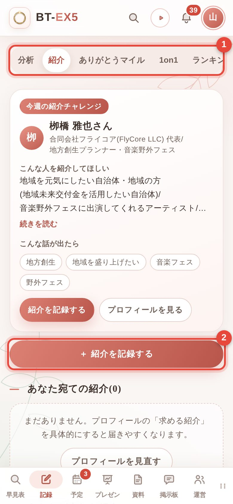
- 上の切りかえで「紹介」「ありがとうマイル」「1on1」「ランキング」「分析」を選びます。
- それぞれの ＋ 紹介を記録する などのボタンから記録します。
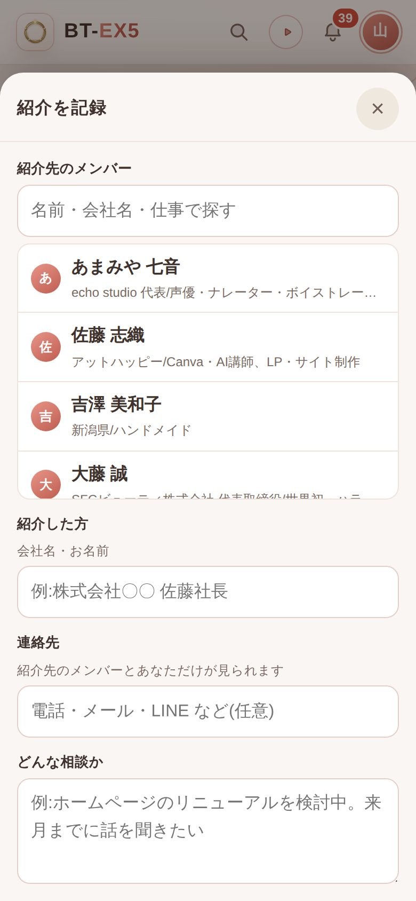
紹介を記録する
- 「紹介先のメンバー」に名前を入れて、一覧から選びます(ひらがなでも探せます)。
- 「紹介した方」に、紹介したお客様の会社名・お名前を入れます。
- 「どんな相談か」を書いて、記録して知らせる を押します。紹介先のメンバーに届きます。
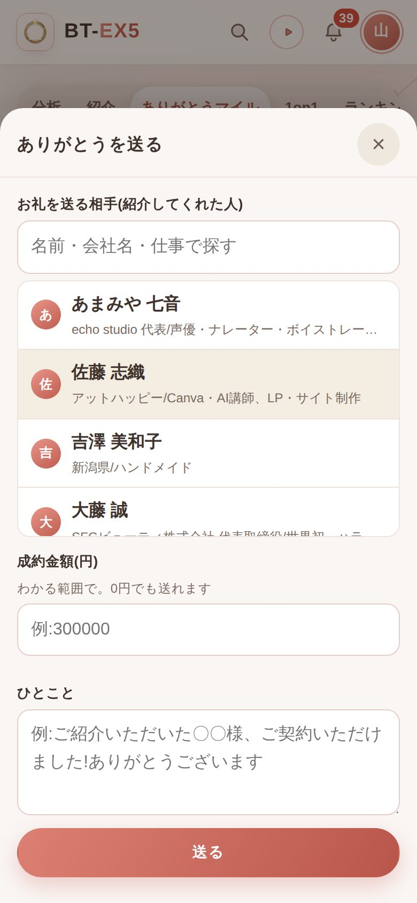
ありがとうマイルを送る
紹介で仕事が決まったら、紹介してくれた人にお礼を送ります。
- お礼を送る相手(紹介してくれた人)を選びます。
- 成約金額を入れます(1円 = 1マイル)。わかる範囲で大丈夫です。0円でも送れます。
- ひとことを書いて 送る を押します。
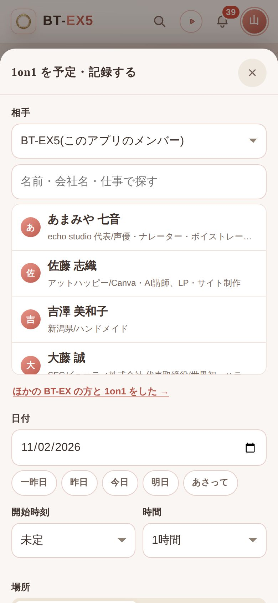
1on1 を予定・記録する
- 相手を選びます。ほかの BT-EX の方とも記録できます(相手の欄の上で、ユニットを選びます)。
- 日付・時刻・場所(または Google Meet)を入れて保存します。
- 「相手に送る文をコピー」で、日時の入った案内を LINE などで送れます。終わったら「実施した」を押します。
掲示板 掲示板
紹介のお願い、イベントの告知、成約のお礼などを、メンバー全員に届けられます。
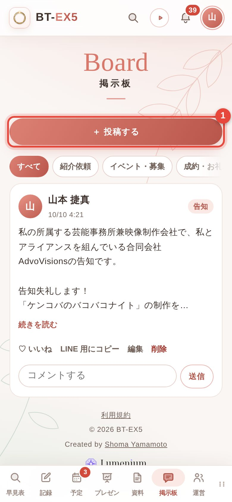
- ＋ 投稿する を押すと、書く画面が開きます。
- ほかの人の投稿には、「いいね」やコメントができます。
- 本文に「@お名前」と書くと、その人に通知が届きます。
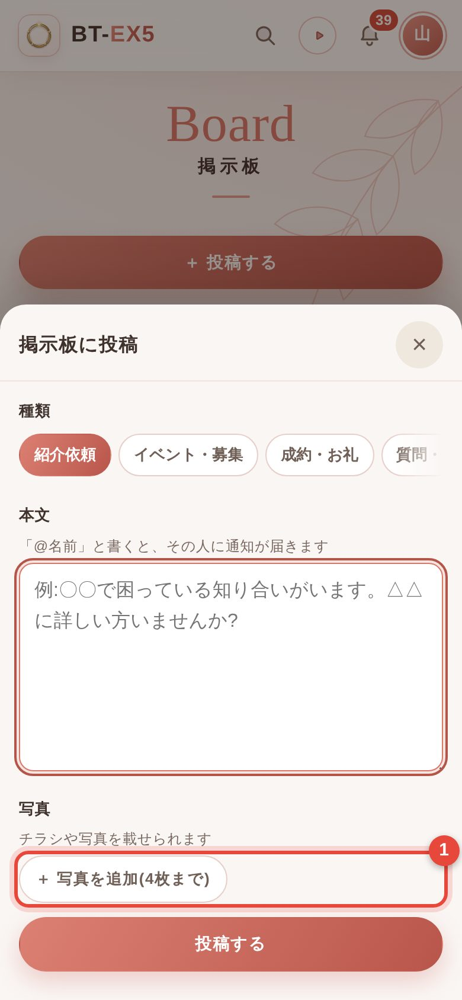
写真も付けられます
- 「写真を追加(4枚まで)」を押すと、スマホの写真を選べます。チラシや会場の写真などにどうぞ。
種類(紹介依頼/イベント・募集/成約・お礼/質問)を選んで、本文を書いて 投稿する を押します。
マイページ
右上の丸い名前のボタンから開きます。自分のプロフィールや設定はここにまとまっています。
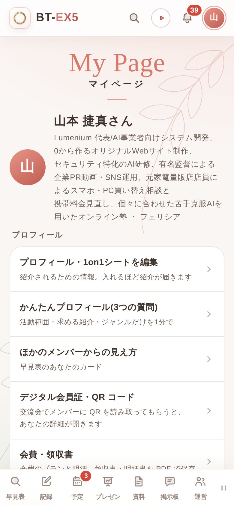
プロフィールを入れる
- 「プロフィール・1on1シートを編集」で、仕事の内容・求める紹介・こんな話が出たら、を入れます。たくさん入れるほど、早見表で見つけてもらいやすくなります。
- 時間がないときは「かんたんプロフィール(3つの質問)」で1分で入れられます。
- 「ほかのメンバーからの見え方」で、早見表の自分のカードを確かめられます。
- 「通知・設定」で、スマホへの通知をオンにできます。文字を大きくすることもできます。
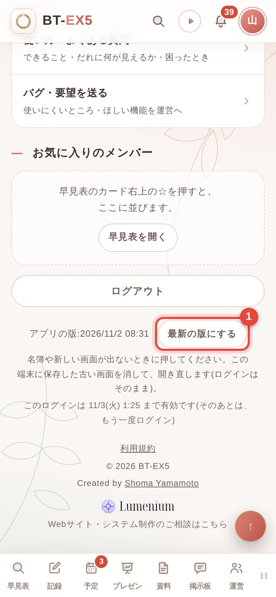
新しい画面が出ないときは「最新の版にする」
- 名簿や新しい機能が出ないときは、マイページのいちばん下の 最新の版にする を押します。ログインはそのままです。
「アプリの版」に出ている日時で、いま開いている版がわかります。
資料を作る 資料
定例会や BT-EX フェスのポスター、掲示板・SNS で使えるお誘い画像を作れます。
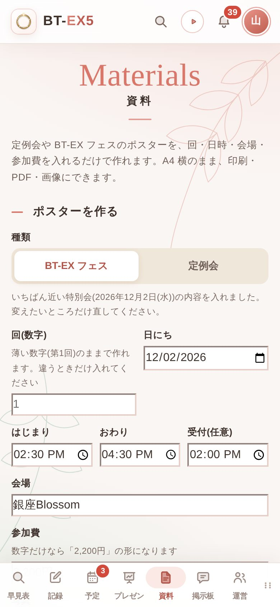
- ポスターを作る:種類(BT-EX フェス/定例会)を選ぶと、いちばん近い予定の日時・会場・参加費が入ります。変えたいところだけ直して、PDF で保存 か「画像で保存」。A4 横で印刷できます。
- 定例会のお誘い画像:日時(2回まで)・オンラインか会場か・「参加したい方は◯◯までお声がけを」の欄のあり/なしを選んで、画像で保存します。
- マスコット(3D):BT-EX5 のマスコット「ときめ」と「つなぐ」を、指で回して見られます。
BT-EX に人を誘うときは、BT メンバーであること、ビジター参加のときもアップクリエの許可、BT-EX への参加はアドバンスリーダーの許可が必須です。むやみに誘わず、ご本人の意思とチームのアドバンスの許可を確かめてください。
運営の方へ プレゼン
運営メンバーには「プレゼン」「運営」のタブが出ます。
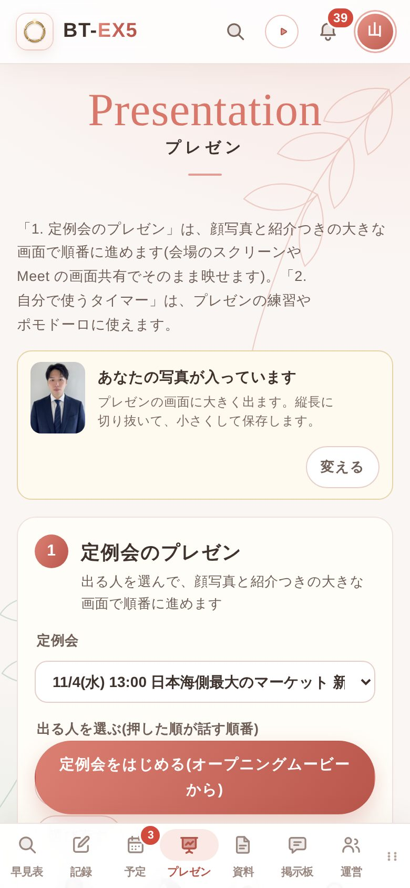
定例会のスライドを進める
- 「定例会」で、その日の定例会を選びます。
- 出る人を、話す順番に押して選びます(「全員」でまとめて選べます。ほかの BT-EX やゲストも足せます)。
- 「定例会をはじめる」で、オープニングムービーから始まります。会場のスクリーンや Meet の画面共有にそのまま映せます。
- スライドは、画面の右下の「進む」「戻る」か、キーボードの → ← で進めます。右上の一覧から、好きな所へ飛べます。
- 左上の時間の枠で、「理想」と「現在」の時刻、進み・遅れがわかります。
- 出欠は、定例会の詳細のメンバー一覧から直せます(「出欠を直す」)。
困ったとき
よくある質問です。解決しないときは、マイページの「バグ・要望を送る」から運営に送れます。
ログインできない
お名前を正しく選んでいるか、パスワードの大文字・小文字を確かめてください。パスワードを忘れたときは、ログインの画面の「はじめての方・パスワードを忘れた方(招待コード)」から入れます。招待コードは運営にお問い合わせください。
新しい名簿や機能が出てこない
スマホに前の画面が残っていることがあります。マイページのいちばん下の「最新の版にする」を押してください。ホーム画面のアイコンから開いている場合は、アプリを一度上にスワイプして閉じてから開き直しても直ります。
通知が届かない
iPhone は、ホーム画面に追加したアイコンから開いて、マイページの「通知・設定」で通知をオンにしてください。スマホの「設定」で、ブラウザやアプリの通知が切れていないかも確かめてください。
欠席をまちがえて押した
申込締切までは、同じ定例会の「出席する」を押せば直ります。締切を過ぎたときは、運営に伝えてください(運営が直せます)。
自分のカードの内容を直したい
マイページの「プロフィール・1on1シートを編集」から直せます。保存すると、すぐに早見表のカードに反映されます。
文字が小さくて読みにくい
画面の上の「あ」のボタン、またはマイページの「通知・設定」で、文字を大きくできます。
パソコンでも使える?
使えます。同じお名前・パスワードでログインしてください。プレゼンの進行や資料づくりは、パソコンの大きな画面が便利です。